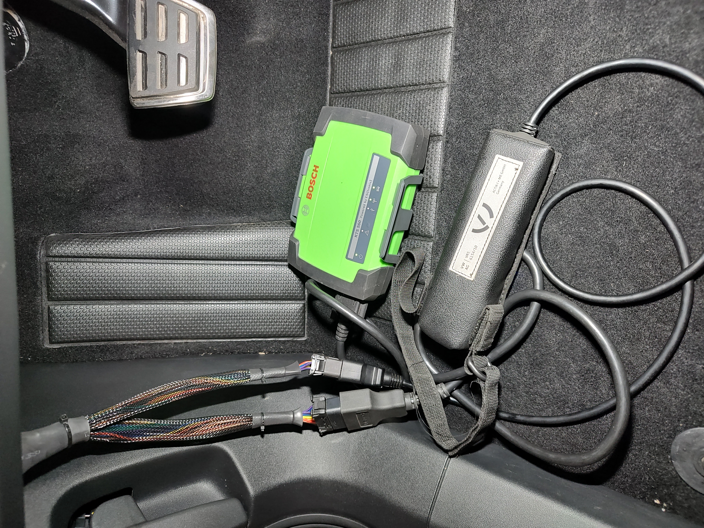

Service der hinteren Trommelbremsen von Elektrofahrzeugen

Hintere Trommelbremsen von Elektrofahrzeugen – fachgerechte Prüfung und präzise Einstellung.
Škoda Enyaq, Volkswagen ID.3, ID.4, ID.5, ID. Buzz und weitere Elektrofahrzeuge des Volkswagen Konzerns mit hinteren Trommelbremsen.
Prüfung, Wartung und Grundeinstellung des Bremsmechanismus nach den Serviceunterlagen des jeweiligen Fahrzeugs. Die Einstellung ist nicht automatisch bei jeder regelmäßigen Inspektion vorgeschrieben.
Warum erfordern hintere Trommelbremsen von Elektrofahrzeugen besondere Aufmerksamkeit?
Elektrofahrzeuge nutzen beim Verzögern in erheblichem Umfang die Energierückgewinnung. Der Elektromotor übernimmt damit einen Teil der Bremsarbeit und die mechanischen Bremsen werden im Alltag möglicherweise seltener genutzt.
Dies verringert den Belagverschleiß, stellt jedoch zugleich besondere Anforderungen an Prüfung und Wartung der Bremsanlage.
Die geschlossene Bauweise schützt Trommelbremsen vor äußeren Einflüssen. Trotzdem können Feuchtigkeit, Korrosion, längere Standzeiten oder geringe Nutzung der mechanischen Bremsen die Funktion beeinträchtigen.
Mögliche Folgen sind Korrosion der Trommel-Laufflächen, Festrosten oder Klemmen der Bremsbacken, eingeschränkte Beweglichkeit der Nachstellung oder unerwünschtes Schleifen der Bremse.
Geringer Belagverschleiß bedeutet daher nicht zwingend einen einwandfreien Zustand der hinteren Bremsen.
Prüfung und fachgerechte Wartung
Bei der fachlichen Prüfung hinterer Trommelbremsen achten wir auf Trommel-Laufflächen, Bremsbacken, Rückholfedern, automatische Nachstellung und Beweglichkeit der einzelnen Teile.
Wir suchen auch nach Anzeichen von Korrosion, Schwergängigkeit, Festsitzen und unerwünschtem Bremswiderstand.
Der korrekte Zustand des Bremsmechanismus ist für die zuverlässige Funktion sowohl der Betriebsbremse als auch der elektromechanischen Parkbremse wichtig.
Präzise Einstellung mit dem Spezialwerkzeug T10635
Bei Serviceeingriffen, die eine vorgeschriebene Grundeinstellung der Bremsbacken erfordern, nutzen wir ein spezielles Werkzeug der Reihe T10635.
Das Werkzeug ermöglicht die präzise Einstellung der Ausgangsposition der Bremsbacken über den automatischen Nachstellmechanismus nach der jeweiligen Herstellervorgabe.
Die korrekte Einstellung unterstützt die geforderte Funktion der Hinterradbremsen und verringert das Risiko von unerwünschtem Schleifen oder Schäden am Bremsmechanismus.
Dauerhafter Bremswiderstand kann den Stromverbrauch erhöhen und die Reichweite beeinträchtigen.
Für unterschiedliche Modelle und Hinterradbremsenausführungen werden passende Varianten des T10635-Werkzeugs verwendet. Das konkrete Verfahren richtet sich stets nach den jeweiligen Serviceunterlagen.
Für den Kunden zählt das richtige Ergebnis der gesamten Reparatur: Zustand der Bremsmechanik, passende mechanische Einstellung und die vom Hersteller vorgeschriebenen Folgefunktionen. Der erforderliche Umfang richtet sich nach Fahrzeug und Eingriff.
Original-Diagnose ODIS beim Bremsbelagwechsel
Beim Belagwechsel der hinteren Trommelbremsen eines konkreten Škoda Enyaq verglichen wir die Servicefunktionen der professionellen Mehrmarkendiagnose Bosch KTS 560 / ESI[tronic] und der Original-Diagnose ODIS Service. Der Schwerpunkt lag auf der Parkbremsenbetätigung und den anschließenden Prüfverfahren.

Im Diagnosemenü festgestellter Unterschied
Im Bosch-Menü waren Funktionen zur Deaktivierung der Parkbremse für den Belagwechsel und zur Aktivierung nach dem Belagwechsel aufgeführt.
ODIS führte unter den Geführten Funktionen einen eigenen Eintrag „Grundeinstellung der Parkbremse (Funktionsprüfung)“ auf. Das Programm „Bremsbelagwechsel“ nannte zugleich die Rückkehr des linken und rechten Antriebs in den Normalbetrieb und eine anschließende „Funktionsprüfung der Bremsanlage“.
In den aufgenommenen Bosch-Menüs war kein eigener Eintrag für diese Prüfung aufgeführt. Dies beweist allein jedoch nicht, dass ein vergleichbarer Vorgang nicht Bestandteil einer anderen ESI[tronic]-Funktion ist, etwa der Parkbremsenaktivierung nach dem Belagwechsel.
Zwei Antriebe, zwei Steuergeräte
Laut angezeigten ODIS-Informationen wird beim geprüften Fahrzeug der linke Parkbremsenmotor V282 vom ABS-Steuergerät J104 gesteuert, der rechte Motor V283 dagegen vom Bremskraftverstärker-Steuergerät J539. ODIS weist ausdrücklich auf diese Aufteilung und die Durchführung in zwei Schritten hin.
Bei der Beurteilung einer Servicefunktion müssen deshalb beide Antriebe und die Abfolge der Schritte berücksichtigt werden. Die Bezeichnung „Parkbremse aktivieren“ beschreibt allein nicht den gesamten Inhalt des Diagnoseverfahrens.
Welche Ausrüstung nutzen wir bei J&S SERVIS?
Für Volkswagen Group Fahrzeuge steht uns neben professioneller Mehrmarkendiagnose ODIS Service mit Online-Zugang zu Herstellersystemen zur Verfügung. Damit können wir beim konkreten Fahrzeug die jeweiligen Geführten Funktionen und Prüfprogramme von ODIS nutzen.
Das Verfahren wählen wir nach Fahrzeugunterlagen und Eingriff. Diagnosearbeiten ergänzen den mechanischen Reparaturteil; ihr Umfang und Ergebnis lassen sich nicht allein anhand der Zahl der Menüeinträge beurteilen.
Abschließender Hinweis
Der Vergleich beschreibt bei einer konkreten Prüfung aufgenommene Menüs. Er ist weder eine vollständige Übersicht der Bosch-Unterstützung noch ein Nachweis, dass der genannte Vorgang ausschließlich in ODIS verfügbar ist. Funktionen können je nach Fahrzeugvariante, Steuergeräteidentifikation sowie Diagnose-Software- und Datenversion unterschiedlich sein.
Spezialisierter Service von J&S SERVIS
Beim Service moderner Elektrofahrzeuge des Volkswagen Konzerns nutzen wir geeignete Spezialwerkzeuge, Diagnoseausrüstung und technische Herstellervorgaben.
Den hinteren Trommelbremsen widmen wir auch dann besondere Aufmerksamkeit, wenn ihre Beläge keinen deutlichen Verschleiß zeigen.